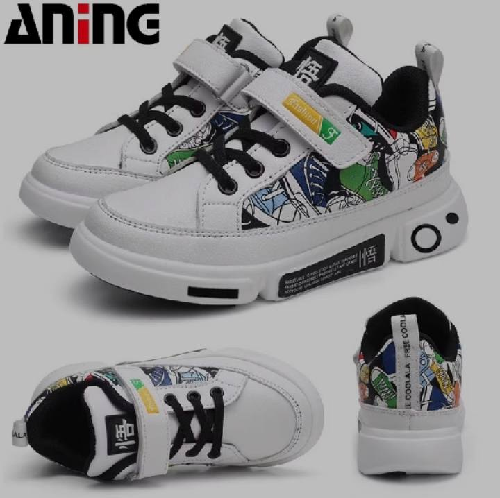

Kategori
Sepatu Kulit Klasik
Sneakers Lokal
Sepatu Batik
Boots Formal
Sepatu Olahraga
Flat Shoes
Sepatu Anak
Pantofel Pria
Slip On
|
Detail Produk
|

Preview Sudut Pandang:
|
Aning Kids Urban Graffiti Sneakers - White Series
Rp 95.000
Rp 135.000
(Hemat 29%)
Terjual 450+
Deskripsi Produk:
Hadirkan gaya kasual perkotaan yang berenergi untuk buah hati Anda dengan Aninc Kids Urban Graffiti
Sneakers. Mengusung konsep seni coretan jalanan (*doodle art*) penuh warna cerah di atas bahan kulit
sintetis putih bersih yang kokoh dan mudah dibersihkan. Dilengkapi tali hitam kasual yang dipadukan dengan
sabuk perekat (*Velcro strap*) berlabel "Fashion" untuk memudahkan anak memakai sepatunya sendiri. Aksen
emblem aksara oriental di lidah sepatu dan sol samping, serta anyaman anyar bertuliskan "FREE COOLALA" di
bagian tumit, membuat anak tampil beda dan penuh rasa percaya diri saat sekolah maupun bermain.
Spesifikasi:
| Bahan Atas |
Premium Synthetic PU Leather dengan High-Definition Doodle Print |
| Kuncian |
Kombinasi Tali Kasual & Adjustable Velcro Strap (Perekat Praktis) |
| Sol Luar |
Molded Chunky Rubber Sole dengan Cushion Pad Anti-Slip |
| Detail Unik |
Kerah Angkel Hitam Empuk, Label Lidah Oriental, Strap Tumit "FREE COOLALA" |
| Garansi |
30 Hari Garansi Tukar Ukuran |
Keunggulan Produk:
✅ Kulit Sintetis Berkualitas Tinggi, Cukup Dilap untuk Membersihkan Noda Lumpur
✅ Sol Tebal Bergaya *Chunky* Modern yang Tetap Ringan dan Fleksibel untuk Berlari
✅ Kerah Engkel Menggunakan Lapisan Busa Hitam Tebal untuk Menghindari Kaki Lecet
✅ Desain Perekat Velcro Kuat Membantu Kemandirian Anak Belajar Memakai Sepatu
|
← Kembali ke Katalog Produk
|
Promo
KIDS SPECIAL
Beli 2 pasang hemat ongkos kirim!
Info Pengiriman
JNE / J&T / SiCepat
Pembayaran
Transfer Bank / COD / QRIS
|